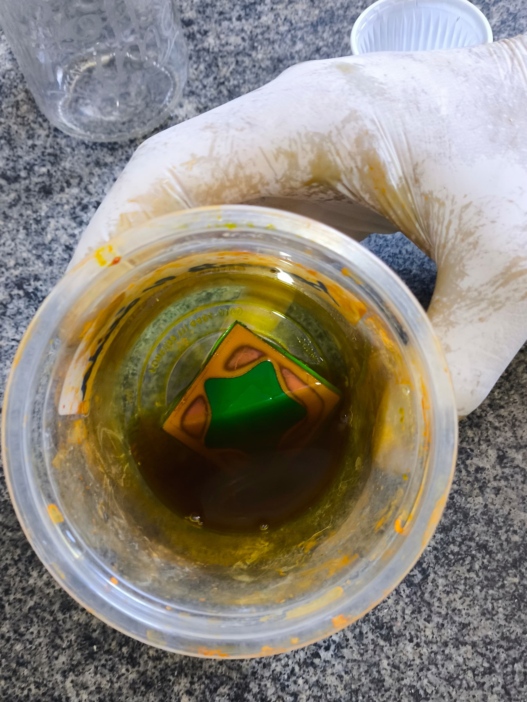
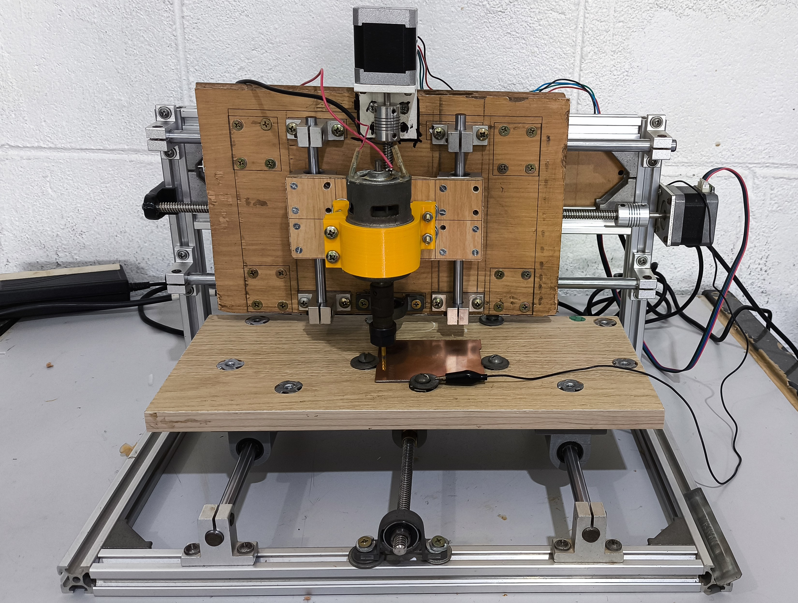

Chapter 6 CIRCUITO IMPRESSO (PCB)
O projeto e a fabricação de circuitos impressos são essenciais em projetos eletrônicos. O uso da PCB (Placa de Circuito Impresso) traz várias vantagens. Em primeiro lugar, elas garantem a integridade e a confiabilidade do circuito, minimizando o risco de mau contato e falhas intermitentes que podem ocorrer com conexões feitas por jumpers e protoboards. Isso é crucial em projetos que exigem alta confiabilidade e estabilidade operacional.
Além disso, uma PCB bem projetada e fabricada melhora significativamente a estética e a organização do projeto. Componentes dispostos de maneira ordenada e trilhas claramente definidas contribuem para uma montagem mais limpa e profissional. Isso também facilita a manutenção e a modificação do circuito, pois cada componente e conexão está claramente identificado.
No FABLAB, usamos placas de fenolite como material base. Esse material é eletricamente isolante e possui uma camada de cobre na superfície, que conduzirá a eletricidade. Existem dois métodos principais de fabricação de PCBs no laboratório: corrosão e usinagem. Mas, antes de qualquer coisa, é necessário fazer o projeto da PCB.
6.1 Projeto do Circuito Impresso
Há várias maneiras de projetar uma PCB, mas utilizamos o site EasyEDA por ser prático e permitir trabalho em equipe. Ele possui uma vasta biblioteca de componentes, facilitando o processo de design. O primeiro passo é criar o diagrama do circuito, garantindo que todos os componentes e conexões estejam corretos. Este diagrama serve como base para a etapa seguinte.
Depois de elaborar o diagrama, passamos para a criação do layout da PCB. Nesta fase, ajustamos as dimensões reais dos componentes e posicionamos cada um deles para evitar que as linhas guia (que representam as trilhas de conexão) se cruzem. Em seguida, escolhemos a largura das trilhas e se o circuito será na parte superior (Top Layer) ou inferior (Bottom Layer). Depois de conectar os componentes com as trilhas, o projeto da PCB está pronto. O formato do arquivo exportado dependerá do método de fabricação que será utilizado.
6.2 Fabricação por Corrosão
O processo de corrosão é mais simples e barato, mas gera resíduos ácidos que precisam ser descartados corretamente. Para demonstrar esse método na aula, fiz um exemplo de circuito utilizando a corrosão. Para produzir a placa, primeiro é necessário exportar o arquivo da PCB no EasyEDA no formato SVG. Esse arquivo é então editado em um software de desenho 2D, como o Inkscape, para obter o negativo da placa, que será gravado a laser.
O próximo passo é cobrir a placa com um material adesivo, como vinil. O laser grava as bordas das trilhas, delineando o contorno delas. Após essa etapa, destacamos os adesivos, deixando apenas as partes das trilhas cobertas, pois o adesivo protegerá essas áreas durante a corrosão.
Para preparar a solução de corrosão, colocamos a placa em um recipiente plástico e adicionamos água até cobrir a placa. Em seguida, retiramos a placa e medimos a quantidade de água no recipiente. A proporção para a solução é de 1 g de percloreto de ferro para cada 4 g de água. Adicionamos o percloreto de ferro à água e misturamos bem.
Com a solução pronta, submergimos a placa e agitamos constantemente para acelerar o processo de corrosão. O ácido corroerá todo o cobre não protegido pelo vinil, deixando apenas as trilhas intactas. Quando o processo estiver completo, lavamos a placa e descartamos a solução corretamente.
Depois disso, retiramos os adesivos das trilhas e perfuramos a placa nos locais necessários. Por fim, soldamos os componentes na PCB, completando o circuito. Embora esse método seja econômico e fácil, é importante manusear os materiais com cuidado e descartar os resíduos de maneira adequada para evitar danos ambientais.

6.3 Fabricação por Usinagem
Outro método para fabricar circuitos impressos é através da usinagem. No FABLAB, usamos a CNC fresadora 3018, conhecida como Mini Fresa, que também funciona por processo subtrativo. Seu funcionamento é bem parecido com o da Big Fresa, mas com uma área de trabalho menor e um spindle de menor potência. A Mini Fresa é especialmente focada na produção de PCBs. Infelizmente, ela não foi apresentada para os alunos na disciplina, pois estava em manutenção.

Para começar a fabricação por usinagem, o primeiro passo é gerar os arquivos Gerber no EasyEDA. Esse processo é bem simples: com o projeto pronto, basta usar a função “gerar Gerber”. Depois, utilizamos o software FlatCam para definir todos os parâmetros necessários para a fabricação. Normalmente, escolhemos três ações que geram três G-codes diferentes: um para as trilhas, um para os furos e outro para o corte das bordas do circuito. Para cada ação, é preciso definir parâmetros como o tipo de fresa a ser usada, a profundidade de corte, a velocidade de movimentação, a quantidade de passadas, entre outros.
O controle da Mini Fresa é feito pelo software Candle GRBL, que é bem parecido com o UGS usado na Big Fresa. Ambos os softwares podem controlar os dois tipos de fresadoras. Antes de iniciar o trabalho, escolhemos a fresa apropriada e definimos a origem da área de trabalho. O Candle realiza um mapeamento de alturas da área de trabalho para ajustar a altura da fresa em relação ao material, utilizando o princípio de continuidade elétrica para essa medição.
Uma vez configurado, o processo de usinagem começa. Cada vez que um arquivo Gerber é trocado, é necessário substituir a fresa correspondente. Esse método é mais caro e demorado, mas tem a vantagem de não gerar resíduos tóxicos. Por outro lado, ele gera bastante pó, o que requer cuidados adicionais para manter o ambiente limpo.